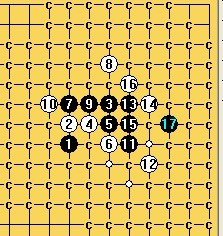
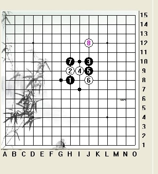

疏星8
首页
茗弈阁
#1 疏星8 作者：茗弈宽容 发表时间：2011-12-1 10:51:05
黑杀，求思路。 ［ 茗弈初学者 于 2011-12-1 11:45:55 时花20金币送鲜花一朵］
［ 茗弈初学者 于 2011-12-1 11:46:02 时花20金币送鲜花一朵］
［ 茗弈初学者 于 2011-12-1 11:46:10 时花20金币送鲜花一朵］
［ 茗弈小刀 于 2011-12-2 14:49:39 时花20金币送鲜花一朵］
#2 Re:疏星8 作者：冰魔 发表时间：2011-12-1 11:17:03
这种点，似乎没什么意义。。 ［ 茗弈宽容 于 2011-12-1 11:46:44 时花20金币送鲜花一朵］
#3 Re:疏星8 作者：茗弈初学者 发表时间：2011-12-1 11:45:44
我不会啊，各位会的帮我整整，有奖的呦！
#4 Re:疏星8 作者：茗弈宽容 发表时间：2011-12-1 11:46:08
是早上群里小蝌蚪在说这个8，我就想顺便看看嘛，弱8，但不知道能必胜不黑棋。
#5 Re:疏星8 作者：茗弈宽容 发表时间：2011-12-1 11:50:35
大G大弟弟已经搞定，检查中。。。。要谱的问我拿哈。
#6 Re:疏星8 作者：茗弈初学者 发表时间：2011-12-1 11:52:29
啊，这么快就完成了！
#7 Re:Re:疏星8 作者：茗弈宽容 发表时间：2011-12-1 12:11:20
左防有问题，宣布流产那一路，重做。。。

#8 Re:Re:Re:疏星8 作者：茗弈宽容 发表时间：2011-12-1 15:26:48

下午和中山智晴弟弟拆了下，头好晕，米有思绪。 呼叫小米老师帮忙！！！
呼叫小米老师帮忙！！！
#9 Re:疏星8 作者：维尔斯特拉斯 发表时间：2011-12-1 17:25:35
10右挡11-F8行吗？没终结者，拿小黑拆的，貌似快必了、、
#10 Re:疏星8 作者：茗弈宽容 发表时间：2011-12-1 17:39:43
10右挡杀了，那个比较简单，左边这个搞不定呢，所以考虑是否换11.
#11 Re:疏星8 作者：维尔斯特拉斯 发表时间：2011-12-1 17:43:07
看错了。。再看看。。［此帖子已被 维尔斯特拉斯 在 2011-12-1 17:47:18 编辑过］
［ 茗弈宽容 于 2011-12-1 17:50:35 时花20金币送鲜花一朵］
#12 Re:疏星8 作者：维尔斯特拉斯 发表时间：2011-12-1 18:16:30
9-G9貌似有希望啊~ ［ 茗弈宽容 于 2011-12-1 19:07:29 时花20金币送鲜花一朵］
#13 Re:疏星8 作者：自来水 发表时间：2011-12-1 18:32:20
看起来需要猥琐流或者曲线救国...
#14 Re:疏星8 作者：自来水 发表时间：2011-12-1 18:37:19
 明天考试，先不拆了。。。各位加油
明天考试，先不拆了。。。各位加油
#15 Re:疏星8 作者：茗弈宽容 发表时间：2011-12-1 19:04:55
楼上坏银~ 
#16 Re:疏星8 作者：茗弈宽容 发表时间：2011-12-1 19:58:21
今晚不搞出来估计要失眠了。。。。。。。现在在做维尔斯特拉斯弟弟那个9。
#17 Re:疏星8 作者：逆刃 发表时间：2011-12-1 20:42:56
拆了一下，下面14是唯一，拆不动了。
#18 Re:疏星8 作者：茗弈宽容 发表时间：2011-12-1 21:22:30
恩，估计又得换了~
#19 Re:Re:疏星8 作者：闫荣辉 发表时间：2011-12-1 21:47:21
这个可以不［此帖子已被 闫荣辉 在 2011-12-1 22:35:18 编辑过］
#20 Re:疏星8 作者：茗弈宽容 发表时间：2011-12-2 9:45:04
 一会拆下荣辉弟弟这个9吧，(*^__^*) 嘻嘻……。弟弟的名字-荣辉使我想起天天渔港。
一会拆下荣辉弟弟这个9吧，(*^__^*) 嘻嘻……。弟弟的名字-荣辉使我想起天天渔港。
#21 Re:Re:疏星8 作者：米 发表时间：2011-12-2 11:30:11
摆了一下这个白8，确认白地毯必败。以上为最强两路。
［此帖子已被 米 在 2011-12-2 11:31:31 编辑过］
［ 茗弈七夜 于 2011-12-2 11:34:32 时花20金币送鲜花一朵］
［ 茗弈小刀 于 2011-12-2 14:48:57 时花20金币送鲜花一朵］
#22 Re:Re:Re:疏星8 作者：茗弈小刀 发表时间：2011-12-2 14:48:31
辛苦我可爱的小米！
#23 Re:疏星8 作者：茗弈宽容 发表时间：2011-12-2 14:53:05
晕，蝌蚪别拿我的号乱说话，他是俺老师！！！ 叫你帮我送花给他，不是送给我，服你了真是。
叫你帮我送花给他，不是送给我，服你了真是。［此帖子已被 茗弈宽容 在 2011-12-2 14:54:53 编辑过］